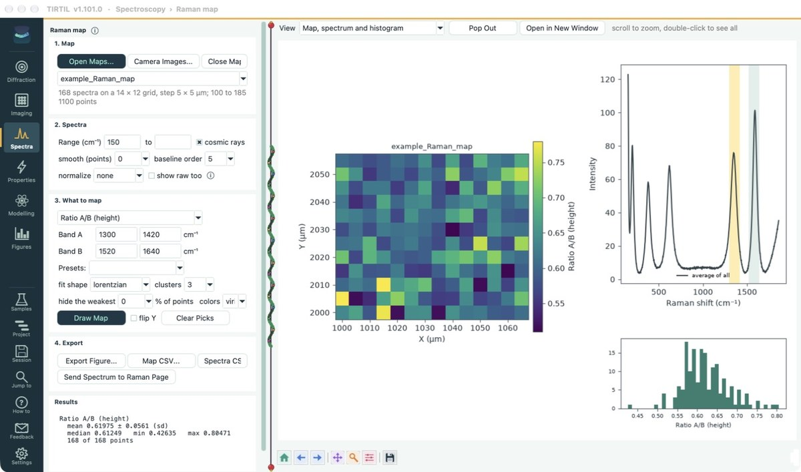
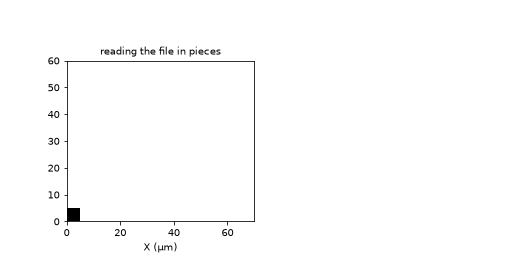

Spectra
Raman map
Where each band is strong, shifted or broad across a sample.

Steps
Open Maps...Open .rmap (Shimadzu) or .wdf (Renishaw) maps. Several tiles of one area are stitched by stage position. Big files read in the background, with a progress bar.- Click a point of the map for its spectrum; Shift-click adds more to compare.
Draw MapPick what to map: band area, height, position, FWHM or a peak fit in band A. Presets set the D and G bands, the Ti3C2 A1g mode and anatase.- Ratios such as I(D)/I(G) use bands A and B. Hide the weakest points to leave out the background.
- Clusters group points with similar spectra (PCA and k-means) and draw their mean spectra.
How it works

Worked example
Ti3C2Tx with Ac ligands, 13 × 12 points at 5 µm: map the 200 cm⁻¹ band area for the MXene, the 150 cm⁻¹ band for anatase, and I(D)/I(G) for the carbon. Points with anatase and a weak 200 cm⁻¹ band show where the flakes oxidised.
In TIRTIL: How to (⌘/) › Try It With Example Data loads this example.